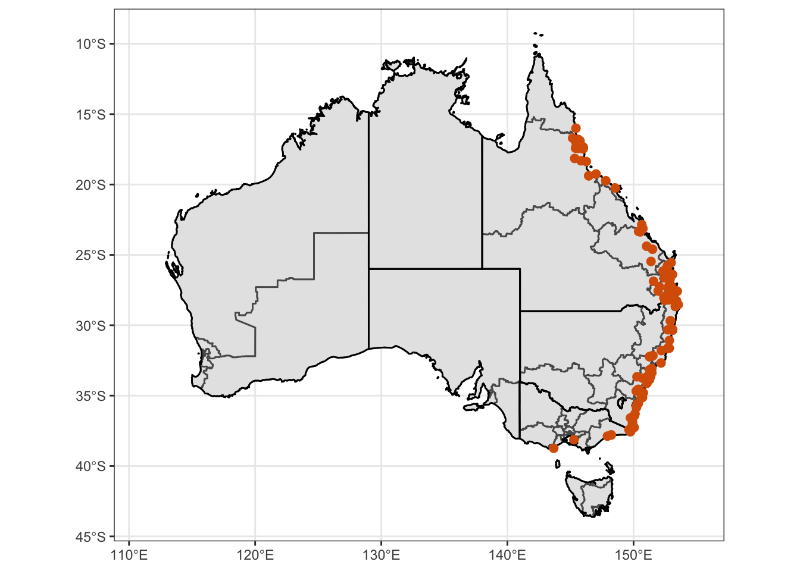
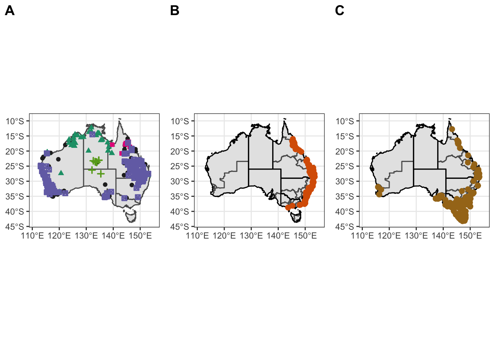

Mapping
Last updated: 2022-02-19
Checks: 7 0
Knit directory: wildlife-ticks/
This reproducible R Markdown analysis was created with workflowr (version 1.7.0). The Checks tab describes the reproducibility checks that were applied when the results were created. The Past versions tab lists the development history.
Great! Since the R Markdown file has been committed to the Git repository, you know the exact version of the code that produced these results.
Great job! The global environment was empty. Objects defined in the global environment can affect the analysis in your R Markdown file in unknown ways. For reproduciblity it’s best to always run the code in an empty environment.
The command set.seed(20210211) was run prior to running the code in the R Markdown file. Setting a seed ensures that any results that rely on randomness, e.g. subsampling or permutations, are reproducible.
Great job! Recording the operating system, R version, and package versions is critical for reproducibility.
Nice! There were no cached chunks for this analysis, so you can be confident that you successfully produced the results during this run.
Great job! Using relative paths to the files within your workflowr project makes it easier to run your code on other machines.
Great! You are using Git for version control. Tracking code development and connecting the code version to the results is critical for reproducibility.
The results in this page were generated with repository version cf0cae8. See the Past versions tab to see a history of the changes made to the R Markdown and HTML files.
Note that you need to be careful to ensure that all relevant files for the analysis have been committed to Git prior to generating the results (you can use wflow_publish or wflow_git_commit). workflowr only checks the R Markdown file, but you know if there are other scripts or data files that it depends on. Below is the status of the Git repository when the results were generated:
Ignored files:
Ignored: .Rproj.user/
Untracked files:
Untracked: .DS_Store
Untracked: .Rhistory
Untracked: .Rprofile
Untracked: ENA_submission/
Untracked: NCBI_submission/
Untracked: analysis/.DS_Store
Untracked: analysis/_footer.html
Untracked: data/
Untracked: experiments/
Untracked: output/.DS_Store
Untracked: output/plots/.DS_Store
Untracked: temp/
Unstaged changes:
Modified: analysis/_site.yml
Modified: output/plots/combined-map1.pdf
Modified: output/plots/combined-map2.pdf
Modified: output/plots/combined-map3.pdf
Modified: output/plots/combined-map4.pdf
Modified: output/plots/map-ixhol1.pdf
Modified: output/plots/map-ixhol2.pdf
Modified: output/plots/map-ixtas1.pdf
Modified: output/plots/map-ixtas2.pdf
Note that any generated files, e.g. HTML, png, CSS, etc., are not included in this status report because it is ok for generated content to have uncommitted changes.
These are the previous versions of the repository in which changes were made to the R Markdown (analysis/mapping.Rmd) and HTML (docs/mapping.html) files. If you’ve configured a remote Git repository (see ?wflow_git_remote), click on the hyperlinks in the table below to view the files as they were in that past version.
| File | Version | Author | Date | Message |
|---|---|---|---|---|
| Rmd | 4d29a72 | Siobhon Egan | 2022-02-19 | re-build to consolidate related data |
| html | 4d29a72 | Siobhon Egan | 2022-02-19 | re-build to consolidate related data |
Map usingozmaps
Load libraries
library(ozmaps)
library(sf)Linking to GEOS 3.8.1, GDAL 3.2.1, PROJ 7.2.1library(sp)
library(dplyr)
Attaching package: 'dplyr'The following objects are masked from 'package:stats':
filter, lagThe following objects are masked from 'package:base':
intersect, setdiff, setequal, unionlibrary(rgdal)Please note that rgdal will be retired by the end of 2023,
plan transition to sf/stars/terra functions using GDAL and PROJ
at your earliest convenience.
rgdal: version: 1.5-28, (SVN revision 1158)
Geospatial Data Abstraction Library extensions to R successfully loaded
Loaded GDAL runtime: GDAL 3.2.1, released 2020/12/29
Path to GDAL shared files: /Library/Frameworks/R.framework/Versions/4.1/Resources/library/rgdal/gdal
GDAL binary built with GEOS: TRUE
Loaded PROJ runtime: Rel. 7.2.1, January 1st, 2021, [PJ_VERSION: 721]
Path to PROJ shared files: /Library/Frameworks/R.framework/Versions/4.1/Resources/library/rgdal/proj
PROJ CDN enabled: FALSE
Linking to sp version:1.4-6
To mute warnings of possible GDAL/OSR exportToProj4() degradation,
use options("rgdal_show_exportToProj4_warnings"="none") before loading sp or rgdal.
Overwritten PROJ_LIB was /Library/Frameworks/R.framework/Versions/4.1/Resources/library/rgdal/projlibrary(raster)
Attaching package: 'raster'The following object is masked from 'package:dplyr':
selectlibrary(ggplot2)
library(readr)Warning: replacing previous import 'lifecycle::last_warnings' by
'rlang::last_warnings' when loading 'hms'library(paletteer)
library(rmapshaper)Registered S3 method overwritten by 'geojsonlint':
method from
print.location dplyrlibrary(ggrepel)
library(tidyverse)── Attaching packages ─────────────────────────────────────── tidyverse 1.3.1 ──✓ tibble 3.1.4 ✓ stringr 1.4.0
✓ tidyr 1.1.3 ✓ forcats 0.5.1
✓ purrr 0.3.4 ── Conflicts ────────────────────────────────────────── tidyverse_conflicts() ──
x tidyr::extract() masks raster::extract()
x dplyr::filter() masks stats::filter()
x dplyr::lag() masks stats::lag()
x raster::select() masks dplyr::select()# ozmaps data not on CRAN
#devtools::install_github("mdsumner/ozmaps.data")
#library(ozmaps.data)
library(readxl)
library(ggpubr)
Attaching package: 'ggpubr'The following object is masked from 'package:raster':
rotateConfigure base mapping of Australia
oz_states <- ozmaps::ozmap_states
ggplot(oz_states) +
geom_sf() +
coord_sf()
| Version | Author | Date |
|---|---|---|
| 4d29a72 | Siobhon Egan | 2022-02-19 |
oz_states <- ozmaps::ozmap_states %>% filter(NAME != "Other Territories")
oz_votes <- rmapshaper::ms_simplify(ozmaps::abs_ced)
ggplot() +
geom_sf(data = oz_states, mapping = aes(fill = NAME), show.legend = FALSE) +
geom_sf(data = oz_votes, fill = NA) +
coord_sf()
| Version | Author | Date |
|---|---|---|
| 4d29a72 | Siobhon Egan | 2022-02-19 |
Mapping Amblyomma triguttatum records
Load data
obs.data.atrig <- read_csv("data/tick_records/atrig/compiled_record_list.csv")New names:
* Identifier -> Identifier...1
* Identifier -> Identifier...20Rows: 926 Columns: 21
── Column specification ────────────────────────────────────────────────────────
Delimiter: ","
chr (19): Identifier...1, Source, State, Locality_1, Locaity_2, Lat_lon, Col...
dbl (2): Lat, Lon
ℹ Use `spec()` to retrieve the full column specification for this data.
ℹ Specify the column types or set `show_col_types = FALSE` to quiet this message.obs.data.atrig$Subspecies <- obs.data.atrig$Tick_subspecies**Make single map with point showing
Create a map showing different subspecies of Am. triguttatum
Make map with state and voting outlines, overlay with all observation data
Atrig1 = ggplot() +
geom_sf(data = oz_votes) +
geom_sf(data = oz_states, colour = "black", fill = "NA") +
geom_point(data = obs.data.atrig, mapping = aes(x = Lon, y = Lat, shape=Subspecies, color =Subspecies, stroke = 1)) +
coord_sf() + theme_bw() +
theme(axis.title.x = element_blank(), axis.title.y = element_blank()) +
scale_color_manual(values=c("#252525", "#1b9e77", "#e7298a", "#66a61e", "#7570b3")) +
scale_shape_manual(values=c(16, 17, 15, 3, 7)) +
xlim (111,155)
Atrig1Warning: Removed 47 rows containing missing values (geom_point).
| Version | Author | Date |
|---|---|---|
| 4d29a72 | Siobhon Egan | 2022-02-19 |
# Map without legend
Atrig2 <- Atrig1 + theme(legend.position = "none")# Save
ggsave("map-atrig-comb.pdf", plot = Atrig1, path = "output/plots", width = 30, height = 15, units = "cm")
ggsave("map-atrig-comb-nolegend.pdf", plot = Atrig2, path = "output/plots", width = 30, height = 15, units = "cm")Facet by subspecies
# Filter out data where subspecies is not specified
obs.data.ssp = filter(obs.data.atrig, Subspecies != "Not specified")
# make master plot
Atrig3 = ggplot() +
geom_sf(data = oz_votes) +
geom_sf(data = oz_states, colour = "black", fill = "NA") +
geom_point(data = obs.data.ssp, mapping = aes(x = Lon, y = Lat, shape=Subspecies, color =Subspecies, stroke = 1)) +
coord_sf() + theme_bw() +
theme(legend.position = "none", axis.title.x = element_blank(), axis.title.y = element_blank()) +
scale_color_manual(values=c("#1b9e77", "#e7298a", "#66a61e", "#7570b3")) +
scale_shape_manual(values=c(17, 15, 3, 7)) + xlim (111,155)
# Facet
Atrig3 = Atrig3 + facet_wrap(~ Subspecies)
Atrig3Warning: Removed 30 rows containing missing values (geom_point).
| Version | Author | Date |
|---|---|---|
| 4d29a72 | Siobhon Egan | 2022-02-19 |
# Save
ggsave("map-atrig-facet.pdf", plot = Atrig3, path = "output/plots", width = 30, height = 20, units = "cm")Simple map
Make simple map for summary slides
Atrig4 = ggplot() +
geom_sf(data = oz_votes) +
geom_sf(data = oz_states, colour = "black", fill = "NA") +
geom_point(data = obs.data.atrig, mapping = aes(x = Lon, y = Lat, color="#7570b3", stroke = 1))
# Customise scale
Atrig4 = Atrig4 + coord_sf() + theme_bw() + theme(legend.position = "none", axis.title.x = element_blank(), axis.title.y = element_blank()) + scale_color_manual(values=c("#7570b3"))
# Remove scale
Atrig5 = Atrig4 + coord_sf() + theme_void() + theme(legend.position = "none") + scale_color_manual(values=c("#7570b3"))Coordinate system already present. Adding new coordinate system, which will replace the existing one.Scale for 'colour' is already present. Adding another scale for 'colour',
which will replace the existing scale.Save maps
ggsave("map-atrig-simple1.pdf", plot = Atrig4, path = "output/plots", width = 30, height = 15, units = "cm")
ggsave("map-atrig-simple2.pdf", plot = Atrig5, path = "output/plots", width = 30, height = 15, units = "cm")Map of Ixodes holocyclus records
Load data
# raw ala records
ixhol.ala <- read_csv(file = "data/tick_records/ixhol/Ixhol-records-2021-02-23/records-2021-02-23.csv")Rows: 321 Columns: 57
── Column specification ────────────────────────────────────────────────────────
Delimiter: ","
chr (40): Record ID, Catalogue Number, Taxon Concept GUID, Scientific Name ...
dbl (8): Latitude - original, Longitude - original, Latitude, Longitude, C...
lgl (8): Vernacular name, Subspecies, Coordinate Precision, IMCRA 4 Region...
date (1): Event Date - parsed
ℹ Use `spec()` to retrieve the full column specification for this data.
ℹ Specify the column types or set `show_col_types = FALSE` to quiet this message.# curated ala records - removed likely incorrect (or as a result of travel?) records from WA, SA and TAS.
ixhol.alacur <- read_csv(file = "data/tick_records/ixhol/Ixhol-records-2021-02-23/records-2021-02-23-curated.csv")Rows: 316 Columns: 57
── Column specification ────────────────────────────────────────────────────────
Delimiter: ","
chr (39): Record ID, Catalogue Number, Taxon Concept GUID, Scientific Name -...
dbl (10): Latitude - original, Longitude - original, Latitude, Longitude, Co...
lgl (8): Vernacular name, Subspecies, Coordinate Precision, IMCRA 4 Regions...
ℹ Use `spec()` to retrieve the full column specification for this data.
ℹ Specify the column types or set `show_col_types = FALSE` to quiet this message.Make map with state and voting outlines, overlay with all observation data
Ixhol = ggplot() +
geom_sf(data = oz_votes) +
geom_sf(data = oz_states, colour = "black", fill = "NA") +
geom_point(data = ixhol.alacur, mapping = aes(x = Longitude, y = Latitude, color="#d95f02", stroke = 1))
# Customise scale
Ixhol1 = Ixhol + coord_sf() + theme_bw() + theme(legend.position = "none", axis.title.x = element_blank(), axis.title.y = element_blank()) + scale_color_manual(values=c("#d95f02"))
Ixhol1Warning: Removed 56 rows containing missing values (geom_point).
| Version | Author | Date |
|---|---|---|
| 4d29a72 | Siobhon Egan | 2022-02-19 |
# Remove scale
Ixhol2 = Ixhol + coord_sf() + theme_void() + theme(legend.position = "none") + scale_color_manual(values=c("#d95f02"))Save maps
ggsave("map-ixhol1.pdf", plot = Ixhol1, path = "output/plots", width = 30, height = 15, units = "cm")Warning: Removed 56 rows containing missing values (geom_point).ggsave("map-ixhol2.pdf", plot = Ixhol2, path = "output/plots", width = 30, height = 15, units = "cm")Warning: Removed 56 rows containing missing values (geom_point).Map of Ixodes tasmani records
Load data
# curated records
obs.data.ixhol <- read_excel("data/tick_records/ixtas/curated.xlsx")New names:
* Identifier -> Identifier...1
* Identifier -> Identifier...20Make map with state and voting outlines, overlay with all observation data
Ixtas = ggplot() +
geom_sf(data = oz_votes) +
geom_sf(data = oz_states, colour = "black", fill = "NA") +
geom_point(data = obs.data.ixhol, mapping = aes(x = Lon, y = Lat, color="#a6761d", stroke = 1))
# Customise scale
Ixtas1 = Ixtas + coord_sf() + theme_bw() + theme(legend.position = "none", axis.title.x = element_blank(), axis.title.y = element_blank()) + scale_color_manual(values=c("#a6761d"))
Ixtas1Warning: Removed 136 rows containing missing values (geom_point).
| Version | Author | Date |
|---|---|---|
| 4d29a72 | Siobhon Egan | 2022-02-19 |
# Remove scale
Ixtas2 = Ixtas1 + coord_sf() + theme_void() + theme(legend.position = "none") + scale_color_manual(values=c("#a6761d"))Coordinate system already present. Adding new coordinate system, which will replace the existing one.Scale for 'colour' is already present. Adding another scale for 'colour',
which will replace the existing scale.Save maps
ggsave("map-ixtas1.pdf", plot = Ixtas1, path = "output/plots", width = 30, height = 15, units = "cm")Warning: Removed 136 rows containing missing values (geom_point).ggsave("map-ixtas2.pdf", plot = Ixtas2, path = "output/plots", width = 30, height = 15, units = "cm")Warning: Removed 136 rows containing missing values (geom_point).Combined map
Make combine map of Am. trig, Ix. hol and Ix. tas.
figure1 <- ggarrange(Atrig2, Ixhol1, Ixtas1,
labels = c("A", "B", "C"),
ncol = 2, nrow = 2)Warning: Removed 47 rows containing missing values (geom_point).Warning: Removed 56 rows containing missing values (geom_point).Warning: Removed 136 rows containing missing values (geom_point).ggsave("combined-map1.pdf", plot = figure1, path = "output/plots", width = 30, height = 15, units = "cm")
figure1
| Version | Author | Date |
|---|---|---|
| 4d29a72 | Siobhon Egan | 2022-02-19 |
figure2 <- ggarrange(Atrig2, Ixhol1, Ixtas1,
labels = c("A", "B", "C"),
nrow = 3)Warning: Removed 47 rows containing missing values (geom_point).Warning: Removed 56 rows containing missing values (geom_point).Warning: Removed 136 rows containing missing values (geom_point).ggsave("combined-map2.pdf", plot = figure2, path = "output/plots", width = 30, height = 15, units = "cm")
figure2
| Version | Author | Date |
|---|---|---|
| 4d29a72 | Siobhon Egan | 2022-02-19 |
figure3 <- ggarrange(Atrig2, Ixhol1, Ixtas1,
labels = c("A", "B", "C"),
ncol = 3)Warning: Removed 47 rows containing missing values (geom_point).Warning: Removed 56 rows containing missing values (geom_point).Warning: Removed 136 rows containing missing values (geom_point).ggsave("combined-map3.pdf", plot = figure3, path = "output/plots", width = 30, height = 15, units = "cm")
figure3
| Version | Author | Date |
|---|---|---|
| 4d29a72 | Siobhon Egan | 2022-02-19 |
gp <- ggarrange(
Atrig2, # First row with line plot
# Second row with box and dot plots
ggarrange(Ixhol1, Ixtas1, ncol = 2, labels = c("B", "C")),
nrow = 2,
labels = "A" # Label of the line plot
) Warning: Removed 56 rows containing missing values (geom_point).Warning: Removed 136 rows containing missing values (geom_point).Warning: Removed 47 rows containing missing values (geom_point).gp
| Version | Author | Date |
|---|---|---|
| 4d29a72 | Siobhon Egan | 2022-02-19 |
ggsave("combined-map4.pdf", plot = gp, path = "output/plots", width = 30, height = 15, units = "cm")
sessionInfo()R version 4.1.2 (2021-11-01)
Platform: x86_64-apple-darwin17.0 (64-bit)
Running under: macOS Catalina 10.15.7
Matrix products: default
BLAS: /Library/Frameworks/R.framework/Versions/4.1/Resources/lib/libRblas.0.dylib
LAPACK: /Library/Frameworks/R.framework/Versions/4.1/Resources/lib/libRlapack.dylib
locale:
[1] en_AU.UTF-8/en_AU.UTF-8/en_AU.UTF-8/C/en_AU.UTF-8/en_AU.UTF-8
attached base packages:
[1] stats graphics grDevices utils datasets methods base
other attached packages:
[1] ggpubr_0.4.0 readxl_1.3.1 forcats_0.5.1 stringr_1.4.0
[5] purrr_0.3.4 tidyr_1.1.3 tibble_3.1.4 tidyverse_1.3.1
[9] ggrepel_0.9.1 rmapshaper_0.4.5 paletteer_1.4.0 readr_2.0.0
[13] ggplot2_3.3.5 raster_3.4-13 rgdal_1.5-28 dplyr_1.0.7
[17] sp_1.4-5 sf_1.0-2 ozmaps_0.4.5 workflowr_1.7.0
loaded via a namespace (and not attached):
[1] colorspace_2.0-2 ggsignif_0.6.2 ellipsis_0.3.2
[4] class_7.3-19 rio_0.5.27 rprojroot_2.0.2
[7] fs_1.5.0 httpcode_0.3.0 rstudioapi_0.13
[10] proxy_0.4-26 farver_2.1.0 bit64_4.0.5
[13] fansi_0.5.0 lubridate_1.7.10 xml2_1.3.2
[16] codetools_0.2-18 knitr_1.37 geojsonlint_0.4.0
[19] jsonlite_1.7.2 broom_0.7.9 dbplyr_2.1.1
[22] rgeos_0.5-9 compiler_4.1.2 httr_1.4.2
[25] backports_1.4.0 lazyeval_0.2.2 assertthat_0.2.1
[28] fastmap_1.1.0 cli_3.0.1 later_1.3.0
[31] s2_1.0.6 htmltools_0.5.2 tools_4.1.2
[34] gtable_0.3.0 glue_1.5.1 geojson_0.3.4
[37] wk_0.5.0 V8_4.1.0 Rcpp_1.0.8
[40] carData_3.0-4 cellranger_1.1.0 oz_1.0-21
[43] jquerylib_0.1.4 vctrs_0.3.8 crul_1.2.0
[46] xfun_0.28 ps_1.6.0 openxlsx_4.2.4
[49] rvest_1.0.1 lifecycle_1.0.0 rstatix_0.7.0
[52] jqr_1.2.2 getPass_0.2-2 scales_1.1.1
[55] vroom_1.5.7 hms_1.1.0 promises_1.2.0.1
[58] parallel_4.1.2 rematch2_2.1.2 yaml_2.2.1
[61] curl_4.3.2 sass_0.4.0 stringi_1.7.6
[64] jsonvalidate_1.3.2 highr_0.9 maptools_1.1-1
[67] e1071_1.7-8 zip_2.2.0 rlang_1.0.0
[70] pkgconfig_2.0.3 evaluate_0.14 lattice_0.20-45
[73] labeling_0.4.2 cowplot_1.1.1 bit_4.0.4
[76] processx_3.5.2 tidyselect_1.1.1 geojsonsf_2.0.1
[79] magrittr_2.0.2 R6_2.5.1 geojsonio_0.9.4
[82] generics_0.1.0 DBI_1.1.1 pillar_1.6.2
[85] haven_2.4.3 whisker_0.4 foreign_0.8-81
[88] withr_2.4.2 units_0.7-2 abind_1.4-5
[91] modelr_0.1.8 crayon_1.4.2 car_3.0-11
[94] KernSmooth_2.23-20 utf8_1.2.2 tzdb_0.1.2
[97] rmarkdown_2.11 grid_4.1.2 data.table_1.14.0
[100] callr_3.7.0 git2r_0.28.0 reprex_2.0.1
[103] digest_0.6.29 classInt_0.4-3 httpuv_1.6.1
[106] munsell_0.5.0 bslib_0.2.5.1